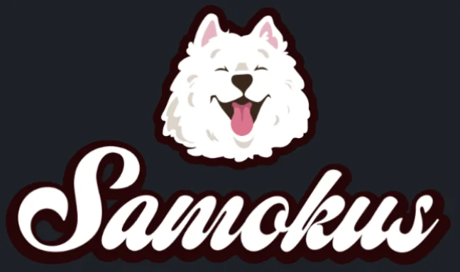
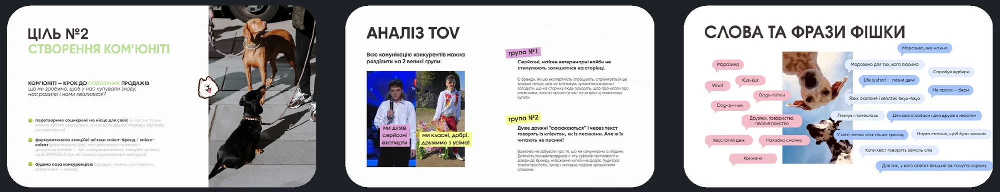
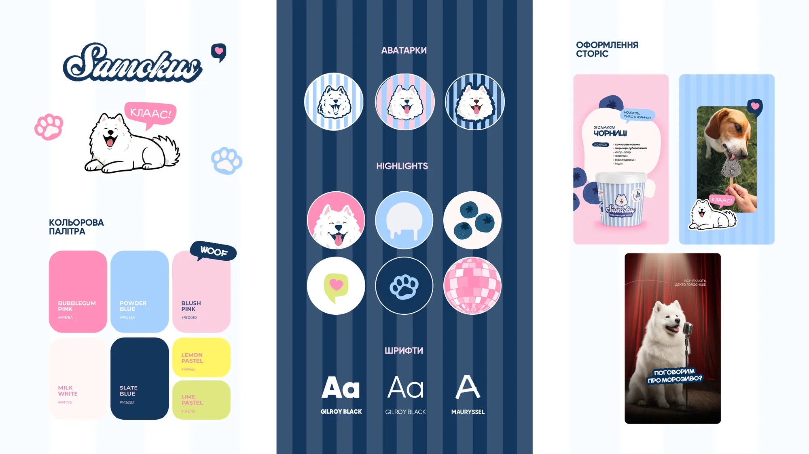
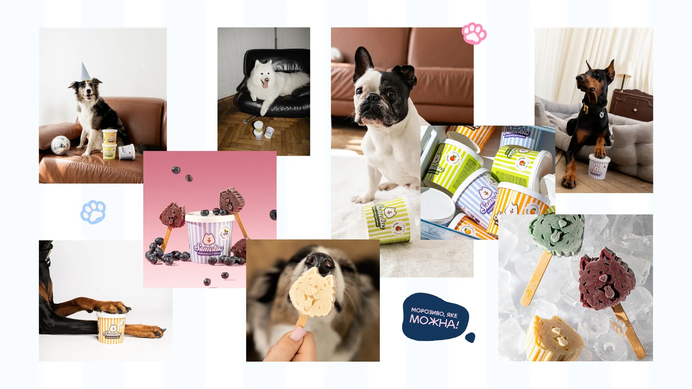
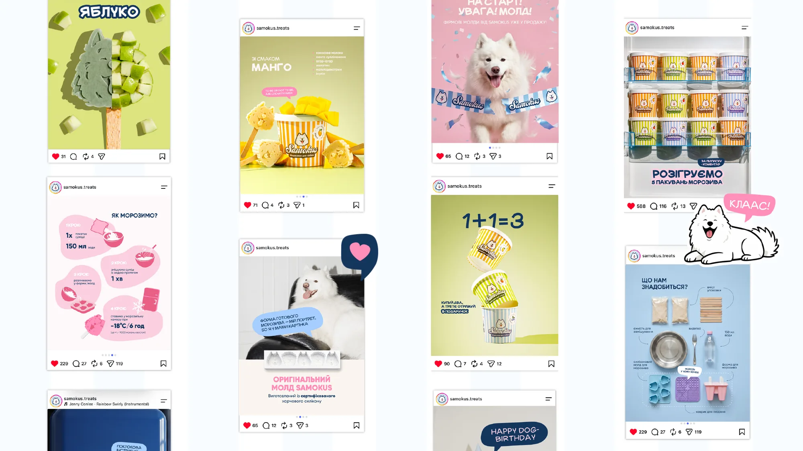
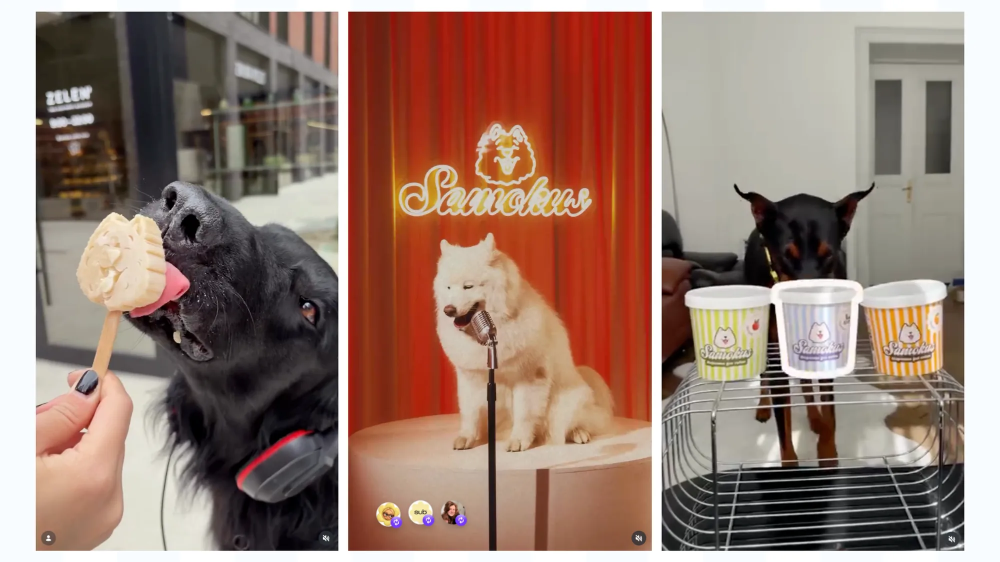
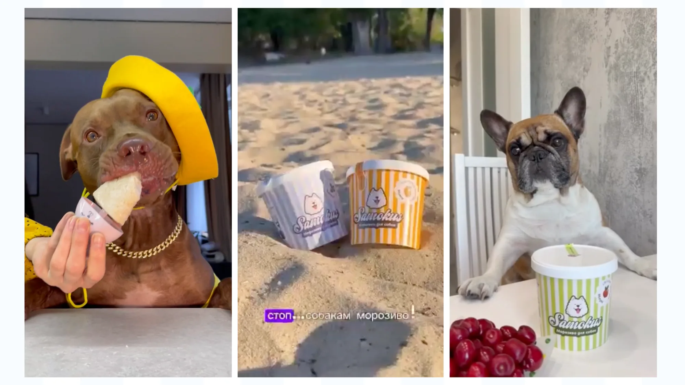
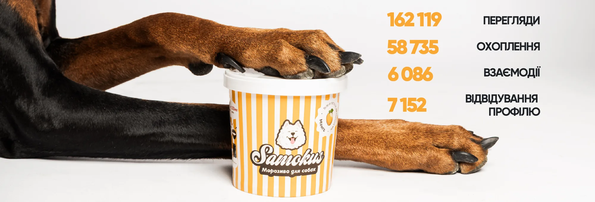

Морозимо для тих, кого любимо
162 119 переглядів
- Ніша
- Pet Care
- Послуги
- SMM-стратегія
- Комплексний SMM
- Креатив
- Продакшн
- Key visual
- Медіа та інфлюенс-маркетинг
- Інструменти
- UGC / UGC Creators
- Creative Production
- Consulting
Задача
Запуск бренду
Виклик: познайомити аудиторію з абсолютно новим брендом та пояснити продукт, про який більшість собачників навіть не чула.
Ідея
Власний характер SAMOKUS
Ми почали з дослідження ринку та аудиторії, розробили стратегію просування, унікальний Tone of Voice та Key Visual. І свідомо відмовившись від звичних для pet-категорії візуальних і вербальних кліше, створили власний характер SAMOKUS.


Виконання
Контент і продакшн
Основою комунікації зробили справжніх собак та їх емоції. AI використовували точково — для легкого розважального контенту, який доповнював живі фото- та відеозйомки.
А коли SAMOKUS почав активно з’являтися на офлайн-подіях — інтегрували їх у контент, знайомлячи з брендом не лише власників собак, а й потенційних B2B-партнерів.



Інфлюенс
Слово дегустаторам
Щоб новий продукт швидше знаходив свою аудиторію, ми залучили pet-блогерів та UGC-креаторів: сформували базу релевантних dog-акаунтів і супроводжували бартерні співпраці — від перших домовленостей до виходу контенту.

Результати
Результати співпраці
За перший місяць ми сформували впізнаваний характер бренду, познайомили людей із новою продуктовою категорією та заклали основу для подальшого розвитку комунікації.
